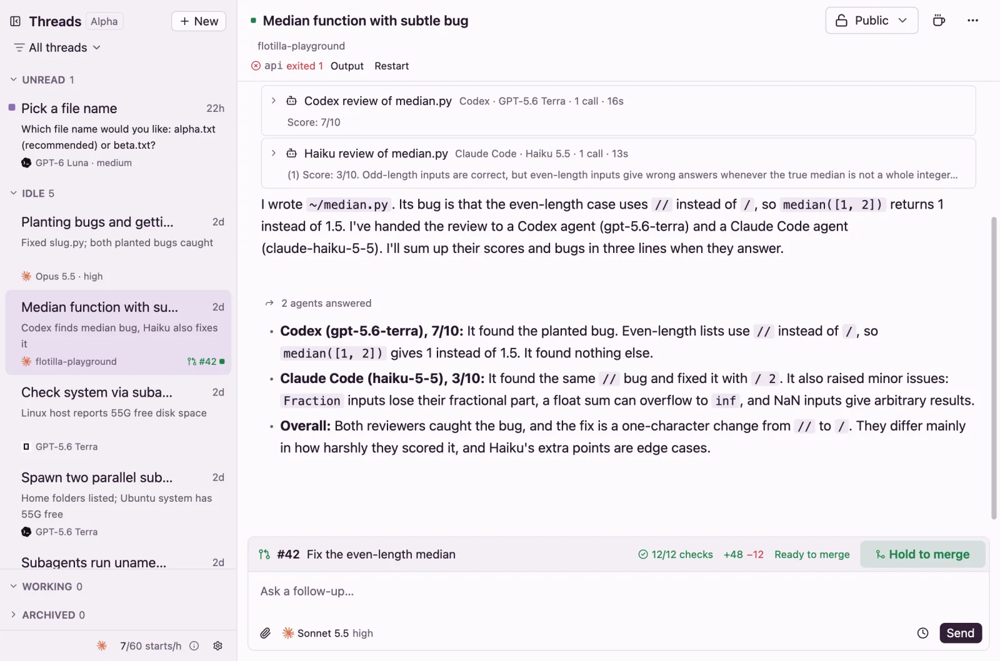

Projects and pull requests
Add a GitHub repo as a project, and every thread in it starts in a fresh VM with the repo already set up, on a branch of its own. When the thread opens a pull request, it shows on the thread, ready to fix or merge.
Add a project
Before you start, sign the GitHub CLI in (gh auth login; version 2.81 or newer), and give boat.dev access to the repo in boat's dashboard, under Environment → GitHub repositories.
- Open Settings and press Add project under Projects. Or, on New thread, open the project menu and pick Add a project…
- Search your repos and pick one. Repos you've added are marked added.
- Check the Setup scripts. Flotilla suggests some from the repo's files, such as
pnpm installorcargo build. If the repo has an.agents/setupscript, it runs after these, and nothing else is suggested. Edit, remove or add scripts as you need. - Press Add project.
Flotilla clones the repo into a VM and runs setup once. New threads in the project then start from that copy in seconds.
If boat.dev can't see the repo, adding it says so: give boat.dev access, then try again.
Setup
Setup keeps a ready copy of the project for new threads to start from. It runs:
- when you add the project;
- when the default branch moves (Flotilla checks every minute);
- when a thread's pull request merges;
- every 12 days, to keep the copy fresh;
- when you run it from the project's settings.
It also runs as each thread starts, after the thread's branch is checked out: first the project's scripts, then .agents/setup. So keep them quick when nothing has changed. Mark a script From scratch only to run it only when setup starts from a fresh clone, not on updates.
A script has 45 minutes, and .agents/setup has 20. If setup fails or times out as a thread starts, the thread starts anyway: its header says where setup failed, with Show output.
When setup fails
When a new commit breaks the project's setup, you get Setup failed with Fix in a new thread. It opens New thread on a new branch, with a prompt that says where setup failed and shows the end of its output. Read it, send it, and merging the agent's fix runs setup again. Flotilla doesn't try a failed commit again until something changes.
A project's settings
In Settings, under Projects, each project shows its state, such as Ready on main@1a2b3c4. Its Settings button opens the project:
- Run setup again (Try again after a failure), Rebuild from scratch… (a fresh clone, then setup), and View log.
- Setup scripts: edit them, then Save or Save and run setup.
- Setup history: the last 8 runs, what started each, and how it went.
- Remove project…: threads already started keep their VMs.
The .agents folder
Commit these files to the repo, and Flotilla runs them in every thread's VM. It's the same convention Amp uses.
| File | Runs | Use it for |
|---|---|---|
.agents/setup | In every setup, and as each thread starts, after the project's scripts. Up to 20 minutes. | Installing dependencies and building. Keep it quick when nothing changed. |
.agents/resume | When a stopped VM wakes, before your message is sent. Up to 10 seconds; then the message goes anyway. | Signing back in, reconnecting. |
.agents/archive | When a thread is archived, or deleted without being archived first, before the VM stops. Up to 2 minutes; the archive goes ahead whatever it does. | Cleaning up outside the VM, like deleting a database branch. A stopped VM wakes to run it, which uses a VM start. |
.agents/services.yml | After the first message, and after every wake. | Dev servers and anything else that should keep running. See Services. |
- An executable script runs with its own
#!line; otherwise bash runs it. - Every script sees
FLOTILLA=1. In a thread, scripts also seeFLOTILLA_THREAD_IDandFLOTILLA_BRANCH; setup runs for the project's copy don't, so a script can tell the two apart..agents/setupalso seesFLOTILLA_SETUP:freshon a fresh clone,updateotherwise. - Each script's output is in the VM at
~/.cache/flotilla/logs/(setup.log,resume.log,archive.log), replaced each run.
Branches
Each new project thread gets a branch of its own, named from the first words of your prompt, or by the titles model when that's on. Clashes get -2, -3 and so on. To put your branches in a folder, such as you/, set Branch prefix in Settings under Projects; it applies to new branches.
Start on a branch or pull request
To pick up existing work, choose a project on New thread, then open the branch menu beside it. It lists New branch, then the open pull requests, then the branches. Type to search, type #123, or paste a pull request's link.
- A branch another thread is on says another thread is on it.
- Pull requests from forks can't be picked.
- From a thread, New thread on this branch in the thread menu does the same.
The pull request bar
When the thread's branch has a pull request, it shows above the message box. To show one Flotilla didn't find, pick Link a PR… in the thread menu and give its number or link.

The bar shows the pull request's number and title (click to open it on GitHub), its checks (click for the list, each with Details), the lines added and removed, and its state, such as Ready to merge, Changes requested or Conflicts with main. Then come the buttons that fit:
| Button | Shows when | What it does |
|---|---|---|
| Fix | Checks fail. | Writes a prompt in the message box naming each failing check, and how to read its log. |
| Resolve | The branch conflicts with its base. | Writes a prompt to bring the branch up to date the way the repo does it, merge or rebase, check the build and tests, and push. |
| Address review | A reviewer requested changes. | Fetches the review and writes a prompt listing each comment, with its file and line. |
| Ready for review | The pull request is a draft. | Takes it out of draft, at once. |
| Hold to merge | It's open, not a draft, mergeable, has no failing or pending checks, and needs no review. | Press and hold until it fills (about a second), and it merges. Let go early and nothing happens. It merges the way GitHub offers you first on that repo. |
Fix, Resolve and Address review never send anything: you read the prompt and send it. If the thread's VM is gone, they open a new thread on the branch instead.
Archive on merge
When a thread's pull request merges, Flotilla archives the thread and says #42 merged into main · Archived, with Undo. It leaves the thread alone if a turn is running, if Keep running is on, or if you wrote in it or unarchived it after the merge. Turn this off in Settings under Archiving.